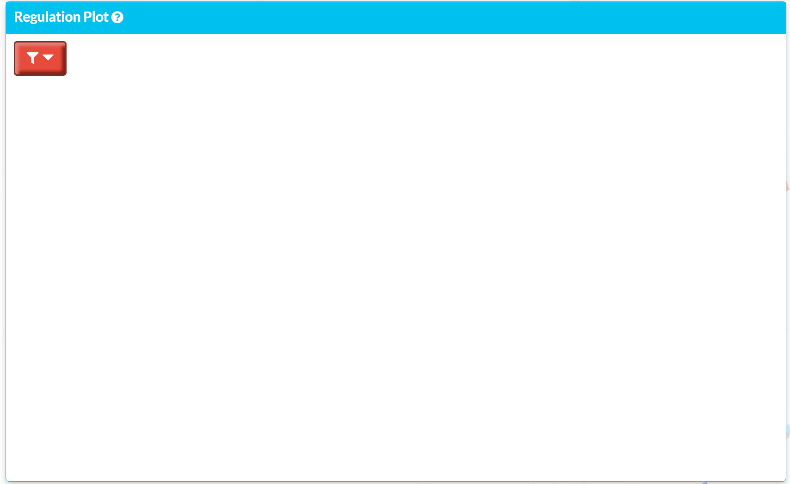
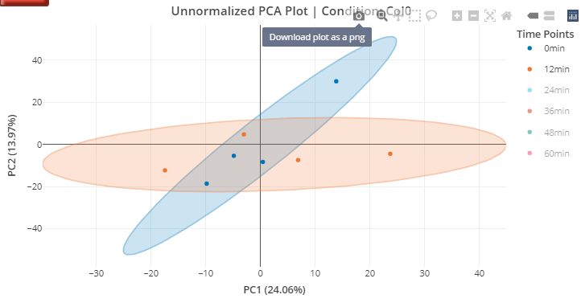

To make sure you can set the parameters prior to plotting, some of the plots will not automatically shown. To display these plots, you want to click the red filter button located on the top left corner of the plotting area. This is also the button to adjust plot input such as peptide ID or condition. For example: 
How to save interactive plot with subset of selections
The interactive selection is not observed by the shiny application. The user has two approach to save a filtered
Method 1: Use the default plotly saving function

Method 2: Higher Resolution Save
You will need to download the HTML version of the Plotly and open on your own browser. This can be achieve through our download plot panel. Then, saving the plot through screenshot or use the default “Download plot as a png” will give you better plot. (Screenshot sometimes are better with higher clarity.)
Step 1. Section 2. Column Identifier
Input Column Name Does not work
The required format for the intensity columns from the raw data must be in the format of “Intensity Col1_Col2_Col3”, where Col1-3 stands for replication (REP), time point (TIME) and condition (CON). There are a few restrictions:
The allowed character/symbols are:
Alphanumeric
Hyphen-Minus (-), UTF-16 code: 002D
Full Stop/Period (.) UTF-16 code: 002E
None of the column names can start with a numeric value, only alphabetic character are allowed.